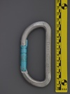
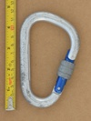
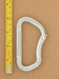

| Image | Summary | ||||
|---|---|---|---|---|---|
|  | CAMP (D) (reverse notch & pin) | D | n/a | n/a | reverse notch & pin snagless nose |
 | CAMP (compact S-spine) (bent gate) | S-spine | n/a | n/a | mild s-bend spine |
 | CAMP (light compact d) | asymmetric D | n/a | n/a | 40 gr carabiner from the pin & notch era |
 | CAMP Calypso Bent Gate | bowed spine | n/a | n/a | 2000's bowed-spine bent gate |
 | CAMP Clip Screwgate | asymmetric D | manual | gate stopped | budget screwgate |
 | CAMP Dyon | swept spine | n/a | n/a | unique keylock wiregate |
|  | CAMP HMS (Bet Climb) (22/10/9) | HMS | manual | gate stopped - unknown | reverse notch & pin snagless nose |
|  | CAMP Multi-Use BET (Bent Gate) | asymmetric D | n/a | n/a | reverse notch & pin snagless nose |
 | CAMP Multi-Use BET (Bent Gate) (scalloped) | asymmetric D | n/a | n/a | reverse notch & pin snagless nose |
 | CAMP Orbit Screw Lock (square knurling) | asymmetric D | manual | gate stopped - gate stop | compact locker |
 | CAMP Orbit Twist Lock (wide square knurling) | asymmetric D | full-auto | twist | compact autolocker |
 | CAMP Photon Lock | asymmetric D | manual | gate stopped - unknown | high-quality lightweight screwlocker |
 | CAMP STEELKAR BENT GATE | asymmetric D | n/a | n/a | demonstrates wiregate weakness |